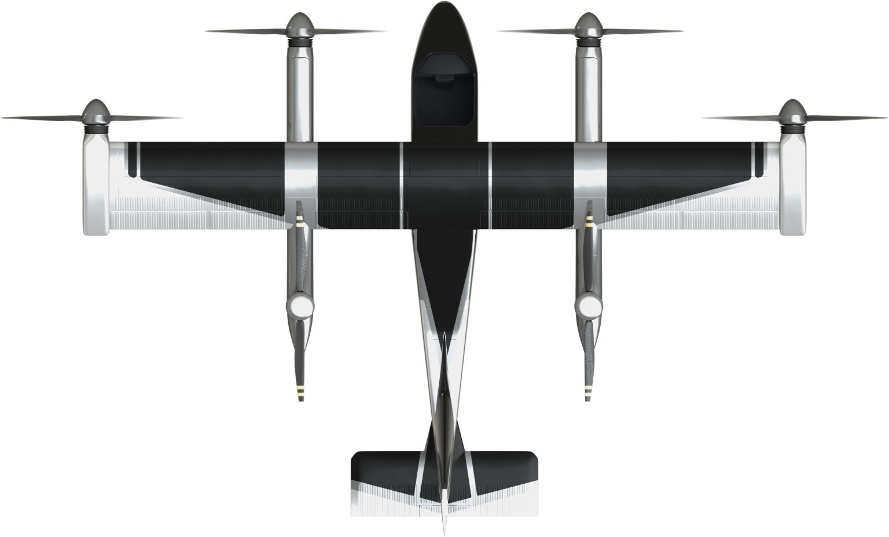
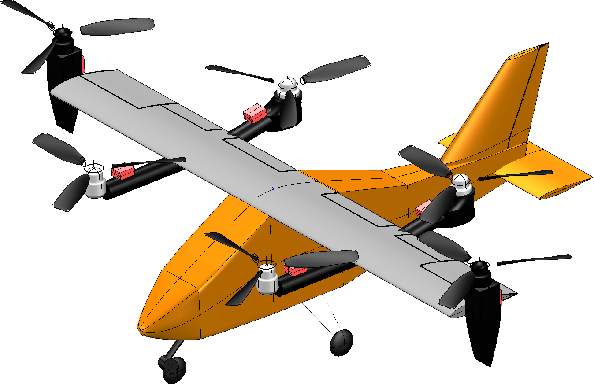
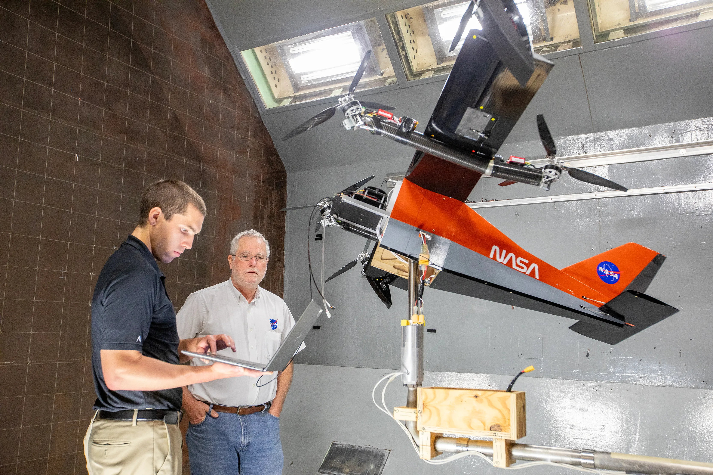

Content on this page is adapted from NASA's official RAVEN program description. The images on this page belong to NASA.
Source: NASA, "Research Aircraft for eVTOL Enabling techNologies (RAVEN)" (view for more information).
The RAVEN project is a collaborative effort with Georgia Tech meant to enable researchers and industries to conduct research, develop practical methods for vehicle design and operation, and train future engineers.
The RAVEN is currently in a small-scale prototype phase, called the SWFT, for development. CAD models of this version are available, and the device uses off-the-shelf parts so that it can be assembled easily. Though the full-scale version has not been made yet, RAVEN SWFT is actively being used for research and development.
Full-scale RAVEN:

Small-scale RAVEN SWFT:

